Tema 2Xarxa recíproca i difracció
Índex
1 Sèries de Fourier en una xarxa periòdica
1.1 Repàs: sèries de Fourier en 1D
Una funció periòdica en una dimensió, \(n(x+a)=n(x)\), es pot escriure com una suma de sinus i cosinus amb els períodes que hi caben exactament, \(a\), \(a/2\), \(a/3\), …: \[n(x) = A_0 + \sum_{p=1}^{\infty} \left[A_p \cos\!\left(\frac{2\pi}{a}px\right) + B_p \sin\!\left(\frac{2\pi}{a}px\right)\right]. \tag{1}\] La periodicitat es comprova substituint \(x\to x+a\): l'argument de cada funció augmenta en \(2\pi p\), que no la canvia. Per a una densitat física, \(n(x)\) és real i els coeficients \(A_p\), \(B_p\) també ho són. Els coeficients s'obtenen multiplicant per \(\cos(2\pi p'x/a)\) o \(\sin(2\pi p'x/a)\) i integrant sobre un període; com que \(\int_0^a\cos^2=\int_0^a\sin^2=a/2\) i totes les integrals de productes creuats s'anul·len, \[A_0=\frac1a\int_0^a n(x)\,dx,\] \[A_p = \frac{2}{a}\int_0^a n(x)\cos\!\left(\frac{2\pi}{a}px\right)dx, \qquad B_p = \frac{2}{a}\int_0^a n(x)\sin\!\left(\frac{2\pi}{a}px\right)dx .\]
1.2 Forma exponencial i condició de realitat
La mateixa sèrie s'escriu de manera molt més compacta amb exponencials complexes. Amb la fórmula d'Euler, \(\cos\phi=\tfrac12(e^{i\phi}+e^{-i\phi})\) i \(\sin\phi=\tfrac1{2i}(e^{i\phi}-e^{-i\phi})\), cada terme de l'equació (1) es converteix en dues exponencials, una amb \(+p\) i una amb \(-p\) (escrivim \(\phi_p=2\pi px/a\)): \[A_p\cos\phi_p+B_p\sin\phi_p=\frac{A_p-iB_p}{2}\,e^{i\phi_p}+\frac{A_p+iB_p}{2}\,e^{-i\phi_p} .\] Agrupant tots els termes per l'enter que apareix a l'exponent, \(p=\dots,-2,-1,0,1,2,\dots\), la sèrie queda \[n(x) = \sum_{p=-\infty}^{\infty} c_p\, e^{i2\pi px/a}, \qquad c_0=A_0,\quad c_p=\frac{A_p-iB_p}{2},\quad c_{-p}=\frac{A_p+iB_p}{2}\quad(p\ge1). \tag{2}\] Com que \(A_p\) i \(B_p\) són reals, \(c_{-p}\) és exactament el complex conjugat de \(c_p\), i \(c_0\) és real. Aquesta és la condició que busquem: per a una funció real, els coeficients amb \(p\) i \(-p\) no són independents.
El mateix resultat es pot obtenir sense passar per la forma trigonomètrica, treballant només amb la sèrie exponencial. El primer pas és calcular els coeficients. Les exponencials són ortogonals en un període: si \(p\neq p'\), l'integrand dona un nombre enter de voltes completes i \[\frac1a\int_0^a e^{i2\pi(p-p')x/a}\,dx=\frac{1}{a}\,\frac{e^{i2\pi(p-p')}-1}{i2\pi(p-p')/a}=0,\] mentre que si \(p=p'\) l'integrand val 1 i la integral també. És a dir, \(\frac1a\int_0^a e^{i2\pi(p-p')x/a}dx=\delta_{pp'}\). Multiplicant l'equació (2) per \(e^{-i2\pi p'x/a}\) i integrant, de tota la suma només sobreviu el terme \(p=p'\): \[c_p = \frac1a\int_0^a n(x)\,e^{-i2\pi px/a}\,dx .\] El segon pas és imposar que \(n\) sigui real, \(n^*(x)=n(x)\). Conjugant la fórmula del coeficient, \[c_p^*=\frac1a\int_0^a n^*(x)\,e^{+i2\pi px/a}\,dx=\frac1a\int_0^a n(x)\,e^{-i2\pi(-p)x/a}\,dx=c_{-p} .\] Per tant, \(n\) real implica \(c_{-p}=c_p^*\) per a tot \(p\) (i, en particular, \(c_0\) real).
El recíproc també és cert, i s'hi veu per què aquesta condició assegura que la suma sigui real. Si \(c_{-p}=c_p^*\), els termes \(p\) i \(-p\) són complexos conjugats l'un de l'altre, i la seva suma és real: \[c_p\,e^{i\phi_p}+c_{-p}\,e^{-i\phi_p}=c_p\,e^{i\phi_p}+\big(c_p\,e^{i\phi_p}\big)^*=2\,\mathrm{Re}\big(c_p\,e^{i\phi_p}\big)\] \[=2\,\mathrm{Re}(c_p)\cos\phi_p-2\,\mathrm{Im}(c_p)\sin\phi_p .\] Comparant amb l'equació (1) es recuperen \(A_p=2\,\mathrm{Re}(c_p)\) i \(B_p=-2\,\mathrm{Im}(c_p)\), les mateixes relacions de l'equació (2). En resum, \(n(x)\) és real si i només si \(c_{-p}=c_p^*\). Quan es descriu una densitat de càrrega real, com farem tot aquest capítol, aquesta condició no és una restricció addicional sinó una conseqüència automàtica de demanar que \(n\) sigui real.
1.3 Generalització a una xarxa de Bravais
Per generalitzar aquesta idea a una funció \(n(\vec{r})\) amb la periodicitat d'una xarxa de Bravais tridimensional, \(n(\vec{r}+\vec{T})=n(\vec{r})\) per a tot vector de xarxa \(\vec{T}=n_1\vec a_1+n_2\vec a_2+n_3\vec a_3\), necessitem primer generalitzar el concepte de “freqüència permesa” \(2\pi p/a\) — i això ens porta directament a definir la xarxa recíproca.
2 La xarxa recíproca
Que aquests vectors compleixen la definició és immediat pel producte triple: \(\vec b_i\cdot\vec a_j=2\pi\delta_{ij}\), i per tant \[\vec G\cdot\vec T = 2\pi(l_1n_1+l_2n_2+l_3n_3) \in 2\pi\mathbb Z \quad\Longrightarrow\quad e^{i\vec G\cdot\vec T}=1.\] Per al recíproc (que tot vector que compleix \(\vec G\cdot\vec T=2\pi N\) per a qualsevol \(\vec T\) ha de tenir la forma anterior), n'hi ha prou amb prendre \(\vec T=\vec a_i\) successivament: cada component \(l_i=\vec G\cdot\vec a_i/2\pi\) ha de sortir un enter.
2.1 Sèrie de Fourier sobre la xarxa recíproca
Amb la xarxa recíproca ja definida, qualsevol funció \(n(\vec r)\) amb la periodicitat de la xarxa real es pot escriure com \[n(\vec r) = \sum_{\vec G} n_{\vec G}\, e^{i\vec G\cdot\vec r}, \qquad n_{\vec G} = \frac{1}{V_c}\int_{V_c} n(\vec r)\,e^{-i\vec G\cdot\vec r}\,dV,\] amb \(V_c\) el volum de la cel·la unitat — l'anàleg exacte, en 3D, de la sèrie exponencial 1D de la secció anterior, canviant “múltiples enters de \(2\pi/a\)” per “vectors de la xarxa recíproca”. Que aquesta és la generalització correcta es comprova imposant la periodicitat \(n(\vec r+\vec T)=n(\vec r)\) sobre la sèrie: igualant els dos desenvolupaments s'obté \(e^{i\vec G\cdot\vec T}=1\) per a tot \(\vec T\) de la xarxa — exactament la condició que defineix \(\vec G\). La condició de realitat també es trasllada sense canvis: conjugant la fórmula de \(n_{\vec G}\) exactament com en 1D, si \(n(\vec r)\) és real aleshores \(n_{-\vec G}=n_{\vec G}^*\), i els termes \(\vec G\) i \(-\vec G\) de la suma sumen \(2\,\mathrm{Re}\big(n_{\vec G}e^{i\vec G\cdot\vec r}\big)\).
3 Difracció: el model de Laue
3.1 Amplitud dispersada per un objecte qualsevol
Considerem una ona plana \(\psi(\vec r)\propto e^{i(\vec k\cdot\vec r-\omega t)}\) que incideix sobre una densitat dispersora \(n(\vec r)\) — per a raigs X, la densitat d'electrons. Cada punt del cristall rep l'ona amb una fase diferent i la redispersa; volem calcular l'amplitud total que arriba a un detector molt llunyà, situat a la posició \(\vec R\) en la direcció de sortida \(\hat k'\), amb \(|\vec R|\) molt més gran que el cristall. Suposem dispersió elàstica, \(|\vec k'|=|\vec k|=2\pi/\lambda\), i anomenem vector de dispersió la diferència \[\Delta\vec k \equiv \vec k'-\vec k .\]
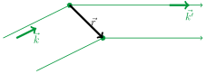
Comparem el raig dispersat per un punt a la posició \(\vec r\) amb el raig dispersat per l'origen \(O\). A l'anada, l'ona incident \(e^{i\vec k\cdot\vec r}\) arriba al punt \(\vec r\) amb una fase \(\vec k\cdot\vec r\) respecte de la que té a \(O\). A la tornada, la distància de \(\vec r\) al detector és, a primer ordre en \(r/R\), \(|\vec R-\vec r|\simeq R-\hat R\cdot\vec r=R-\hat k'\cdot\vec r\); el camí de sortida aporta per tant una fase \(|\vec k'|\,|\vec R-\vec r|\simeq k'R-\vec k'\cdot\vec r\), és a dir, una fase \(-\vec k'\cdot\vec r\) respecte del raig que surt de \(O\). Sumant les dues contribucions, \(\Delta\phi(\vec r)=\vec k\cdot\vec r-\vec k'\cdot\vec r=-\Delta\vec k\cdot\vec r\), i l'amplitud total al detector és la suma de les contribucions de tots els elements de volum, cadascun amb un pes proporcional a la densitat dispersora que hi ha: \[F(\Delta\vec k) = \int_V n(\vec r)\,e^{-i\Delta\vec k\cdot\vec r}\,dV, \qquad I(\Delta\vec k)\propto|F(\Delta\vec k)|^2 .\] Alguns llibres defineixen \(\Delta\vec k=\vec k-\vec k'\) i escriuen \(e^{+i\Delta\vec k\cdot\vec r}\); tot el que segueix és idèntic canviant \(\vec G\to-\vec G\), que també és un vector de la xarxa recíproca.
Aquest model tracta la dispersió de la manera més simple possible: cada fotó es dispersa com a molt una vegada dins el cristall (aproximació cinemàtica, o de Born), de manera elàstica, i la font i el detector són prou lluny perquè les ones siguin planes. Tampoc inclou els factors geomètrics i de polarització que un difractòmetre real multiplica sobre les intensitats. Les posicions dels pics no depenen de cap d'aquestes simplificacions; les intensitats relatives, en part, sí.
3.2 L'amplitud dispersada per un cristall
Un cristall és una xarxa més una base (Tema 1): l'àtom \(j\) de la cel·la \(\vec T\) té el nucli a la posició \(\vec T+\vec r_j\), on \(\vec T\) recorre els \(N\) nusos de la xarxa i \(j=1,\dots,N_b\) els àtoms de la base. Els electrons d'aquest àtom estan repartits al voltant del nucli amb una densitat \(n_j(\vec\rho)\), on \(\vec\rho\) és la posició respecte del nucli. Suposarem que la densitat del cristall és la suma de les densitats de tots els seus àtoms: \[n(\vec r)=\sum_{\vec T}\sum_{j=1}^{N_b} n_j(\vec r-\vec T-\vec r_j).\] Cada terme és la densitat de l'àtom \(j\) desplaçada fins al seu nucli: val \(n_j(\vec\rho)\) al punt \(\vec r=\vec T+\vec r_j+\vec\rho\).
Partim de l'amplitud de la secció anterior i hi substituïm aquesta densitat. Com que la integral d'una suma és la suma de les integrals, podem treure les dues sumes fora: \[F(\Delta\vec k)=\int_V n(\vec r)\,e^{-i\Delta\vec k\cdot\vec r}\,dV =\sum_{\vec T}\sum_{j}\int n_j(\vec r-\vec T-\vec r_j)\,e^{-i\Delta\vec k\cdot\vec r}\,dV .\] Ara cada integral correspon a un sol àtom. Hi fem el canvi de variable \(\vec\rho=\vec r-\vec T-\vec r_j\), és a dir, \(\vec r=\vec T+\vec r_j+\vec\rho\). Per a \(\vec T\) i \(j\) fixos, això només trasllada l'origen fins al nucli de l'àtom, i una translació no canvia l'element de volum: \(dV=d^3\rho\). La integral queda \[\int n_j(\vec r-\vec T-\vec r_j)\,e^{-i\Delta\vec k\cdot\vec r}\,dV =\int n_j(\vec\rho)\,e^{-i\Delta\vec k\cdot(\vec T+\vec r_j+\vec\rho)}\,d^3\rho .\] L'exponencial d'una suma és el producte de les exponencials, i els dos primers factors no depenen de \(\vec\rho\), de manera que surten de la integral: \[\int n_j(\vec\rho)\,e^{-i\Delta\vec k\cdot(\vec T+\vec r_j+\vec\rho)}\,d^3\rho =e^{-i\Delta\vec k\cdot\vec T}\;e^{-i\Delta\vec k\cdot\vec r_j}\int n_j(\vec\rho)\,e^{-i\Delta\vec k\cdot\vec\rho}\,d^3\rho =e^{-i\Delta\vec k\cdot\vec T}\;e^{-i\Delta\vec k\cdot\vec r_j}\;f_j(\Delta\vec k),\] on hem anomenat \[f_j(\Delta\vec k)=\int n_j(\vec\rho)\,e^{-i\Delta\vec k\cdot\vec\rho}\,d^3\rho\] el factor de forma atòmic, que estudiarem a la secció 4.1. Tornant a sumar sobre tots els àtoms, \[F(\Delta\vec k)=\sum_{\vec T}\sum_{j=1}^{N_b} e^{-i\Delta\vec k\cdot\vec T}\;e^{-i\Delta\vec k\cdot\vec r_j}\;f_j(\Delta\vec k) .\] Cada àtom es comporta com un dispersor situat al seu nucli, amb una “intensitat de dispersió” \(f_j\) que depèn de com té repartits els electrons. Finalment, el primer factor de cada terme només depèn de \(\vec T\) i els altres dos només de \(j\), i una doble suma d'aquest tipus es factoritza, \(\sum_{\vec T}\sum_j a_{\vec T}\,b_j=\big(\sum_{\vec T}a_{\vec T}\big)\big(\sum_j b_j\big)\): \[F(\Delta\vec k)=\underbrace{\Bigg[\sum_{\vec T}e^{-i\Delta\vec k\cdot\vec T}\Bigg]}_{L(\Delta\vec k)}\; \underbrace{\Bigg[\sum_{j=1}^{N_b} f_j(\Delta\vec k)\,e^{-i\Delta\vec k\cdot\vec r_j}\Bigg]}_{S(\Delta\vec k)} .\]
3.3 Àtoms puntuals: una delta a cada àtom
El cas més senzill, i el que farem servir sempre que no calgui més detall, és suposar que tots els electrons de cada àtom són al nucli: l'àtom \(j\) és una càrrega puntual amb \(Z_j\) electrons, \(n_j(\vec\rho)=Z_j\,\delta(\vec\rho)\). La densitat del cristall és llavors una delta de Dirac a cada àtom, \[n(\vec r)=\sum_{\vec T}\sum_{j=1}^{N_b} Z_j\,\delta(\vec r-\vec T-\vec r_j),\] i en substituir-la a \(F\) cada delta selecciona el valor de l'exponencial a la posició del seu àtom (propietat de filtratge, \(\int g(\vec r)\,\delta(\vec r-\vec r_0)\,dV=g(\vec r_0)\)): \[F(\Delta\vec k)=\sum_{\vec T}\sum_j Z_j\int\delta(\vec r-\vec T-\vec r_j)\,e^{-i\Delta\vec k\cdot\vec r}\,dV =\sum_{\vec T}\sum_j Z_j\,e^{-i\Delta\vec k\cdot(\vec T+\vec r_j)} .\] És l'expressió general amb \(f_j=Z_j\): un àtom puntual dispersa igual en totes les direccions, i el seu factor d'estructura és \(S=\sum_j Z_j\,e^{-i\Delta\vec k\cdot\vec r_j}\).
3.4 La condició de Laue
Cada terme de la suma sobre la xarxa, \(e^{-i\Delta\vec k\cdot\vec T}\), és un nombre complex de mòdul 1. Si \(\Delta\vec k\) és un vector de la xarxa recíproca, \(\Delta\vec k=\vec G\), aleshores per la pròpia definició de la xarxa recíproca \(e^{-i\vec G\cdot\vec T}=1\) per a tot \(\vec T\): els \(N\) termes valen 1, se sumen en fase i \(L=N\). Si \(\Delta\vec k\) no ho és, les fases dels diferents nusos són diferents i es van repartint per tota la circumferència, de manera que els termes s'anul·len entre ells i \(L\) queda molt per sota de \(N\).
Es veu explícitament en una cadena de \(N\) nusos, \(T=na\) amb \(n=0,1,\dots,N-1\), on anomenem \(q\) la component de \(\Delta\vec k\) al llarg de la cadena. La suma és una sèrie geomètrica de raó \(e^{-iqa}\): \[L(q)=\sum_{n=0}^{N-1}\big(e^{-iqa}\big)^n=\frac{1-e^{-iqaN}}{1-e^{-iqa}} .\] Fent servir \(1-e^{-i\theta}=e^{-i\theta/2}\big(e^{i\theta/2}-e^{-i\theta/2}\big)=2i\,e^{-i\theta/2}\sin(\theta/2)\) al numerador i al denominador, les fases desapareixen en fer el mòdul: \[|L(q)|^2=\frac{\sin^2(Nqa/2)}{\sin^2(qa/2)} .\] Quan \(qa=2\pi p\), amb \(p\) enter, tots els termes de la suma valen 1 i \(|L|^2=N^2\): és un pic. El primer zero al costat de cada pic és a \(Nqa/2=\pi\), és a dir a una distància \(\Delta q=2\pi/(Na)\), de manera que l'amplada del pic és proporcional a \(1/N\). Entre pics, en canvi, \(|L|^2\le1/\sin^2(qa/2)\), que no creix amb \(N\) i és, relativament al pic, de l'ordre de \(1/N^2\). La figura mostra \(|L|^2/N^2\) per a dues cadenes de longitud diferent.
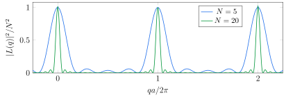
Per a un cristall real la \(N\) és enorme: 1 mm de cristall amb \(a=3\) Å són \(N\approx3\times10^6\) cel·les per direcció, i el pic ocupa una part en tres milions de l'espai entre pics — a la pràctica, una delta. En tres dimensions passa exactament el mateix en cadascuna de les tres direccions de la xarxa.
En dues dimensions, amb \(N\) cel·les en cada direcció, la suma és el producte de dues sumes com aquesta, una per a cada vector primitiu: \[|L|^2=\frac{\sin^2(N\,\Delta\vec k\cdot\vec a_1/2)}{\sin^2(\Delta\vec k\cdot\vec a_1/2)}\;\frac{\sin^2(N\,\Delta\vec k\cdot\vec a_2/2)}{\sin^2(\Delta\vec k\cdot\vec a_2/2)} .\] Al llarg d'una línia \(\Delta\vec k=\xi\,\vec b_1\) tenim \(\Delta\vec k\cdot\vec a_1=2\pi\xi\) i \(\Delta\vec k\cdot\vec a_2=0\): el segon factor val \(N^2\) i el primer és exactament la corba de la cadena.
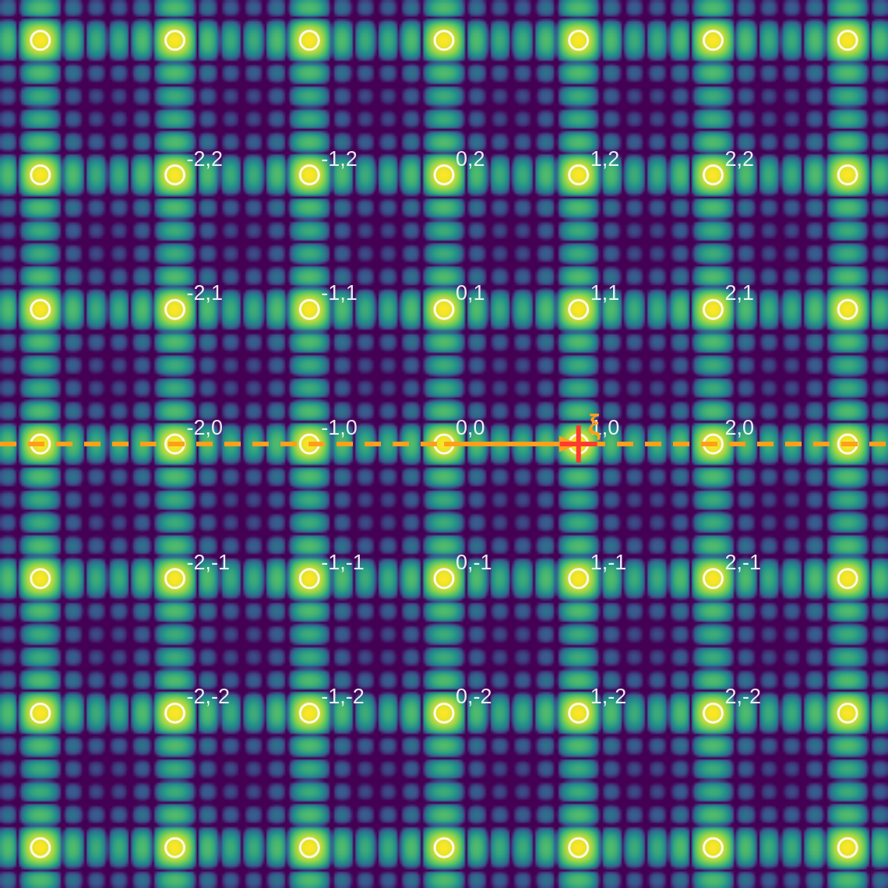
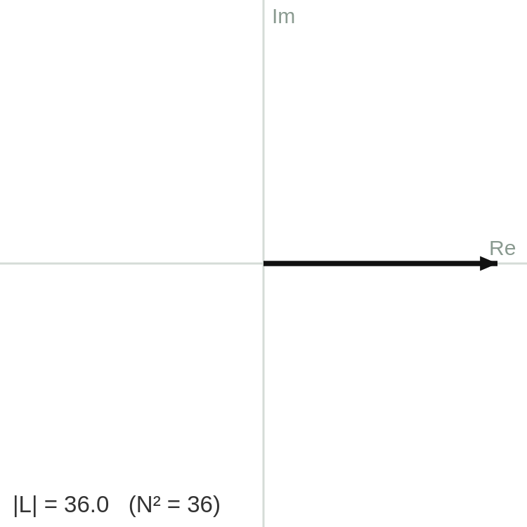
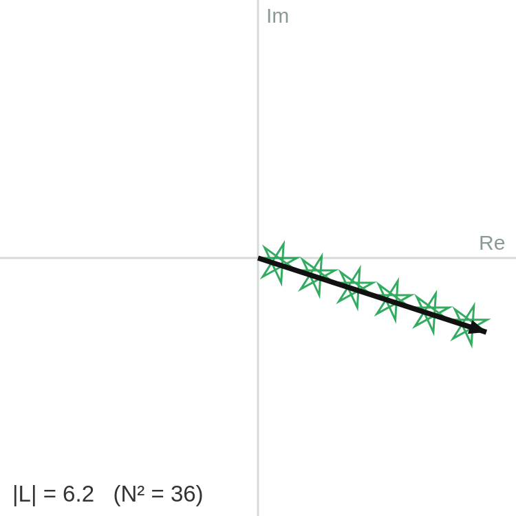
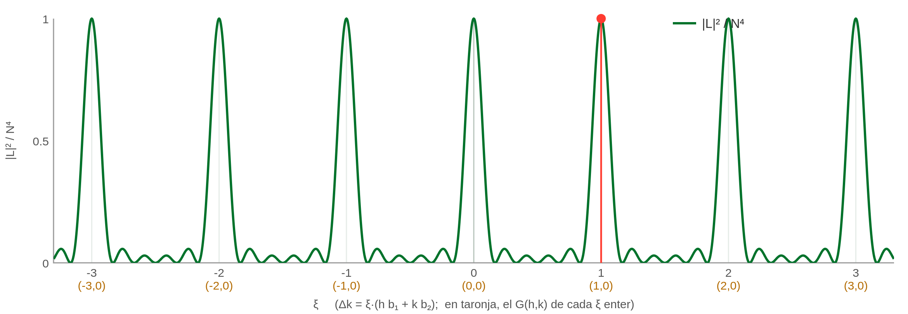
Xarxa quadrada amb \(N=6\). Dalt, a l'esquerra: \(|L|^2\) en funció de \(\Delta\vec k\) (escala logarítmica); els cercles són els vectors \(\vec G\) i la línia taronja és la recta \(\Delta\vec k=\xi\,\vec b_1\). Dalt, al centre i a la dreta: les \(N^2=36\) fletxes \(e^{-i\Delta\vec k\cdot\vec T}\) posades una darrere l'altra, a \(\Delta\vec k=\vec G_{10}\) (totes alineades, \(|L|=36\)) i a \(\Delta\vec k=0.42\,\vec b_1\) (es cargolen, \(|L|=6.2\)). Baix: \(|L|^2/N^4\) al llarg de la línia, que és \(\sin^2(6\pi\xi)/\big(36\sin^2(\pi\xi)\big)\).
3.5 Equivalència amb la llei de Bragg
Com que la dispersió és elàstica, \(|\vec k'|=|\vec k|\), i amb \(\vec k'=\vec k+\vec G\) la condició de Laue es pot escriure en forma escalar: \[|\vec k+\vec G|^2=|\vec k|^2\quad\Longrightarrow\quad 2\,\vec k\cdot\vec G+G^2=0 .\] Per interpretar-la geomètricament cal relacionar \(|\vec G|\) amb els plans de la xarxa. Sigui \(\vec G_{hkl}=h\vec b_1+k\vec b_2+l\vec b_3\) amb \(h,k,l\) sense cap factor comú. Per a qualsevol nus, \(\vec G_{hkl}\cdot\vec T=2\pi(hn_1+kn_2+ln_3)=2\pi m\) amb \(m\) enter, i els nusos amb el mateix \(m\) estan tots en un pla perpendicular a \(\vec G_{hkl}\), a distància \(\vec G_{hkl}\cdot\vec T/|\vec G_{hkl}|=2\pi m/|\vec G_{hkl}|\) de l'origen. Dos plans consecutius estan, doncs, separats per \[d_{hkl}=\frac{2\pi}{|\vec G_{hkl}|},\] i \(\vec G_{hkl}\) és perpendicular a la família de plans \((hkl)\) — els mateixos índexs de Miller del Tema 1. Els múltiples \(n\vec G_{hkl}\) també són vectors de la xarxa recíproca, amb \(|n\vec G_{hkl}|=2\pi n/d_{hkl}\).
Si \(2\theta\) és l'angle entre \(\vec k\) i \(\vec k'\), el triangle isòsceles format per \(\vec k\), \(\vec k'\) i \(\Delta\vec k\) dona \(|\Delta\vec k|=2|\vec k|\sin\theta\). Igualant a \(|n\vec G_{hkl}|\), \[2\,\frac{2\pi}{\lambda}\sin\theta=\frac{2\pi n}{d_{hkl}}\quad\Longrightarrow\quad 2d_{hkl}\sin\theta=n\lambda ,\] que és la llei de Bragg. Per a una xarxa cúbica de costat \(a\), \(|\vec G_{hkl}|=\tfrac{2\pi}{a}\sqrt{h^2+k^2+l^2}\) i, per tant, \(d_{hkl}=a/\sqrt{h^2+k^2+l^2}\).
4 Factor de forma atòmic i factor d'estructura
4.1 Factor de forma atòmic
A la secció 3 hem vist que cada àtom entra a l'amplitud dispersada amb un pes \(f_j\), que en el model puntual val simplement \(Z_j\). En un àtom real, els electrons estan repartits al voltant del nucli amb una densitat \(n_j(\vec\rho)\), cada element de volum de l'àtom dispersa amb la seva pròpia fase \(e^{-i\Delta\vec k\cdot\vec\rho}\) respecte del nucli, i el pes de l'àtom és la suma de totes aquestes contribucions:
A \(\Delta\vec k=0\) l'exponencial val 1 i \(f_j(0)=\int n_j\,d^3\rho=Z_j\), el nombre d'electrons de l'àtom; per a un àtom puntual, \(n_j=Z_j\delta(\vec\rho)\) i es recupera \(f_j=Z_j\) per a qualsevol \(\Delta\vec k\). Un àtom real, però, té una mida d'aproximadament 1 Å, comparable a \(\lambda\): electrons de parts diferents del mateix àtom dispersen amb fases diferents i s'anul·len parcialment. Per això \(f_j\) decreix quan \(|\Delta\vec k|\) creix, és a dir, a angles de dispersió grans.
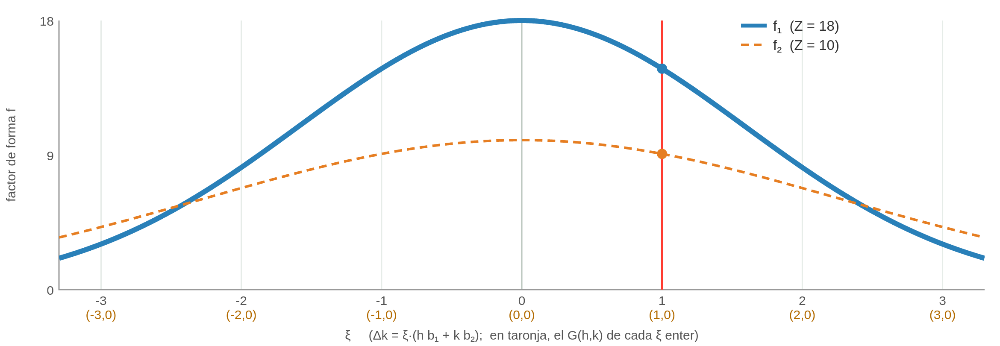
Factors de forma de dos àtoms gaussians, \(f_j=Z_j\,e^{-\sigma_j^2|\Delta\vec k|^2/2}\), al llarg de \(\Delta\vec k=\xi\,\vec b_1\): \(Z_1=18\), \(\sigma_1=0.10\,a\) (continu) i \(Z_2=10\), \(\sigma_2=0.07\,a\) (discontinu). Tots dos valen \(Z\) a l'origen; l'àtom més gran cau més de pressa i, a \(|\Delta\vec k|\) grans, acaba dispersant menys que el petit.
Si l'àtom té simetria esfèrica, \(n_j\) només depèn de \(\rho=|\vec\rho|\) i la integral es pot fer en coordenades esfèriques amb l'eix \(z\) al llarg de \(\Delta\vec k\). Amb \(G\equiv|\Delta\vec k|\), \(\Delta\vec k\cdot\vec\rho=G\rho\cos\theta\) i \(d^3\rho=\rho^2\sin\theta\,d\rho\,d\theta\,d\varphi\): \[f(G)=\int_0^\infty d\rho\;\rho^2 n(\rho)\int_0^{2\pi}d\varphi\int_0^\pi e^{-iG\rho\cos\theta}\sin\theta\,d\theta .\] La integral en \(\varphi\) dona \(2\pi\), i la integral en \(\theta\) es fa amb el canvi \(u=\cos\theta\) (\(du=-\sin\theta\,d\theta\)): \[\int_0^\pi e^{-iG\rho\cos\theta}\sin\theta\,d\theta=\int_{-1}^{1}e^{-iG\rho u}\,du =\frac{e^{iG\rho}-e^{-iG\rho}}{iG\rho}=\frac{2\sin(G\rho)}{G\rho} .\] Per tant \[f(G)=\int_0^\infty 4\pi\rho^2\,n(\rho)\,\frac{\sin(G\rho)}{G\rho}\,d\rho .\] Quan \(G\to0\), \(\sin(G\rho)/(G\rho)\to1\) i es recupera \(f=Z\). El factor és real perquè l'àtom és simètric.
4.2 Factor d'estructura
A la condició de Laue, el factor d'estructura és \[S(\vec G)=\sum_{j=1}^{N_b}f_j(\vec G)\,e^{-i\vec G\cdot\vec r_j}, \qquad I(\vec G)\propto N^2|S(\vec G)|^2 .\] Per calcular-lo a la pràctica convé escriure la posició de cada àtom en coordenades fraccionàries, \(\vec r_j=x_j\vec a_1+y_j\vec a_2+z_j\vec a_3\), i \(\vec G=h\vec b_1+k\vec b_2+l\vec b_3\). En el producte escalar hi ha nou termes \(\vec b_i\cdot\vec a_j\), però com que \(\vec b_i\cdot\vec a_j=2\pi\delta_{ij}\) només sobreviuen els tres diagonals: \[\vec G\cdot\vec r_j=2\pi(hx_j+ky_j+lz_j) \quad\Longrightarrow\quad S_{hkl}=\sum_j f_j\,e^{-2\pi i(hx_j+ky_j+lz_j)} .\] Als càlculs que segueixen només cal recordar que, per a \(m\) enter, \(e^{-2\pi im}=1\) i \(e^{-i\pi m}=(-1)^m\).
L'anàleg en dues dimensions de la BCC és la xarxa quadrada centrada: dos àtoms iguals a \((0,0)\) i \((\tfrac12,\tfrac12)\), amb \(S_{hk}=f\big[1+(-1)^{h+k}\big]\). Al llarg de \(\Delta\vec k=\xi\,\vec b_1\), \(S(\xi)=f\big(1+e^{-i\pi\xi}\big)\) i \(|S|^2=2f^2\big(1+\cos\pi\xi\big)\), que s'anul·la exactament als \(\xi\) senars.
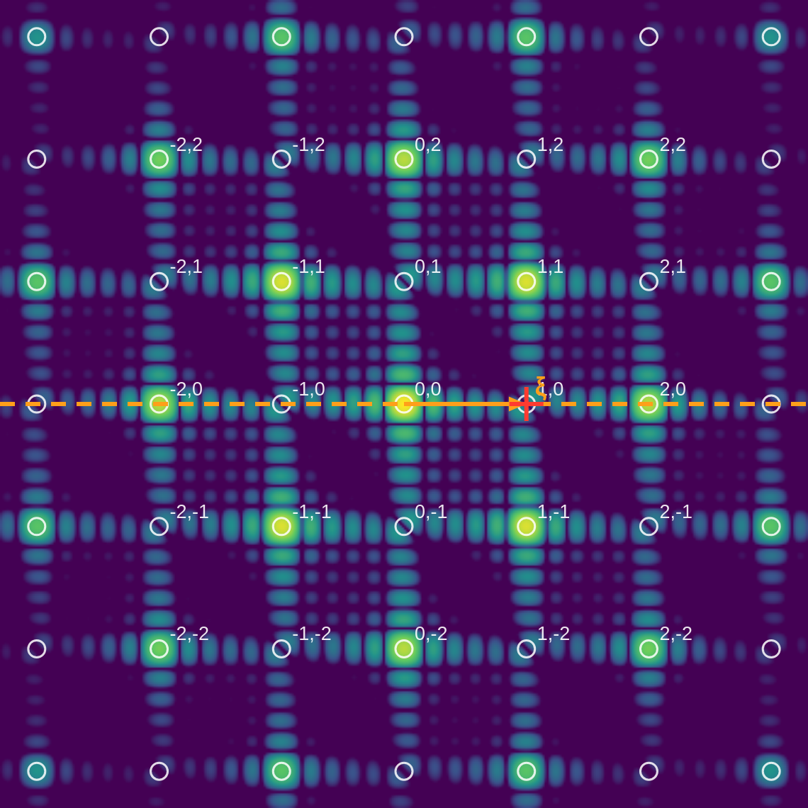
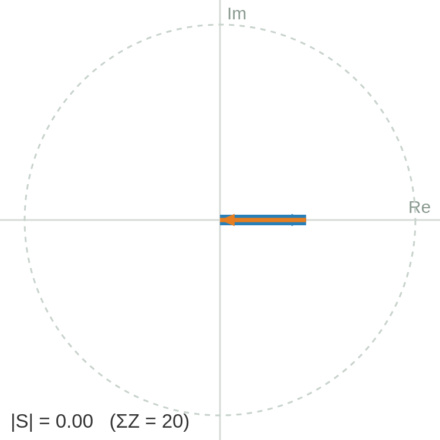
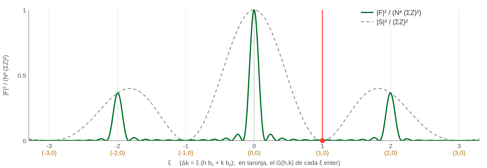
Xarxa quadrada centrada amb dos àtoms iguals. Dalt, a l'esquerra: \(|F|^2\) (escala logarítmica); els cercles \(\vec G\) amb \(h+k\) senar, com \((1,0)\) i \((0,1)\), no tenen pic. Dalt, a la dreta: les dues fletxes de \(S\) a \(\Delta\vec k=\vec G_{10}\), iguals i oposades: \(S=0\). Baix: \(|F|^2\) al llarg de \(\Delta\vec k=\xi\,\vec b_1\); en discontinu, \(|S|^2\), que passa per zero a \(\xi=\pm1,\pm3\).
Quan els àtoms de la base no són iguals, els factors de forma deixen de ser un simple factor comú i passen a decidir la intensitat de cada reflexió. L'estructura de la sal n'és l'exemple més clar.
En l'anàleg bidimensional, la quadrada centrada amb dos àtoms diferents, \(S_{hk}=f_1+f_2(-1)^{h+k}\). Al llarg de \(\Delta\vec k=\xi\,\vec b_1\), \(|S|^2=f_1^2+f_2^2+2f_1f_2\cos\pi\xi\): als \(\xi\) senars val \((f_1-f_2)^2\), petit però no zero.
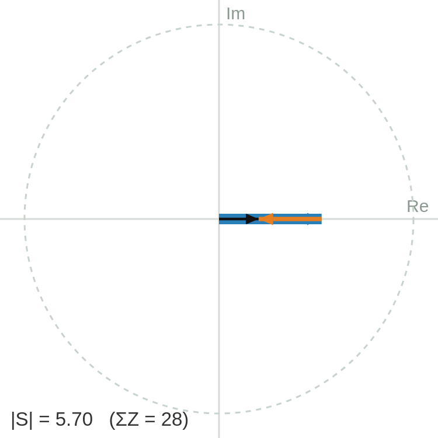
{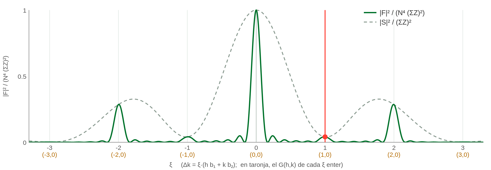
} Quadrada centrada amb \(Z_1=18\) i \(Z_2=10\) (com el NaCl). Esquerra: a \(\Delta\vec k=\vec G_{10}\) les dues fletxes de \(S\) són oposades però de longitud diferent, i en queda la diferència. Dreta: \(|F|^2\) al llarg de \(\Delta\vec k=\xi\,\vec b_1\); els pics senars són febles, no absents.